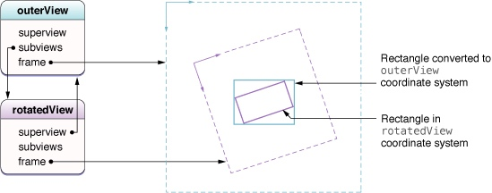

View
视图作为程序中主要的交互对象,自然有许多职责和功能,比如负责布局和子视图的管理, 内容的绘制和动画,以及响应事件的处理.
视图的创建和配置
创建视图
创建视图有两种方式:Nib加载和纯代码加载.其中如果采用Nib加载的方式,又分为加载控制器的Nib文件和加载视图的Nib文件两种.若是加载控制器Nib则加载后控制器会在合适的时机使用和移除其根视图,纯视图的Nib文件加载就需要从NSBundle对象或者UINib对象去手动地创建.
Tag标示视图
对视图的tag属性设置可以用于后续视图的获取,使用viewWithTag:方法,而基于Tag的视图搜索采用深度优先搜索,比遍历视图效率更高.
视图层次的创建和管理
视图添加移除的内存管理
通过addSubview后的视图会自动被父视图强引用,所以在保证视图不被移除父视图的视图层次的情况下单独引用该视图时推荐使用弱引用;通过removeFormSuperView方法从原有视图层中移除视图后,视图会被autorelease一次,如果该视图进入下一次事件循环周期前仍然没有被其他对象强引用,则视图就会被释放掉.
如何隐藏视图
让视图暂时地不可见有两种方式:设置hidden属性为YES;改变aplha属性为0.后一种是具有动画性的属性,可以用于动画,前一种则不会产生动画.
隐藏的视图仍会可能成为事件的第一响应者,因此在隐藏前需要显示地resign第一响应者状态.
如何定位视图层次的视图
- 对特定视图使用强引用
- 设置视图的tag属性,使用
viewWithTag:方法获取
视图的旋转,位移,缩放
针对视图的transform属性进行修改,可以产生视图旋转,位移,缩放的效果,这些效果都是围绕视图的center进行变化.多次对视图transform设置时,不同的变换顺序会产生不同的展示效果.
视图层次中转换坐标
- 对于UIView对象提供
convertPoint:fromView等方法进行不同视图间坐标系的转换. - 对于UIWindow对象提供类似
convertPoint:fromWindow等方法进行不同窗口间坐标系转换.
如下图当子视图应用了rotation transform后,将子视图基于自己坐标系的矩形转换到父视图坐标系下,生成的区域矩形比原来矩形更大,是在父坐标系下包含子视图原来矩形的最小矩形.

动态调整视图的尺寸/位置
视图布局的变化时机
- 视图size改变
- 设备方向的改变
- 视图相关的sublayers的改变
- 对视图调用
setNeedsLayout或者layoutIfNeed方法 - 对视图的layer调用
setNeedsLayout方法
管理视图布局
iOS程序管理视图布局的方式主要有为设置frame手动管理布局变化的方式和使用autolayout或者Autoresizing规则自动处理布局变化两种.
当视图尺寸变化时,一定会自己调用
layoutSubviews进行子视图frame的自动调整,通过重写该方法可以覆盖系统对子视图frame的调整,对其进行自定义设置,比如:- 调整自己任何子视图的尺寸和位置
- 添加移除子视图或者Core Animation图层
- 调用子视图的
setNeedsDisplay或setNeedsDisplayInRect:方法迫使子视图重新绘制
利用autolayout布局引擎和Autoresizing规则能够让视图自动处理自己尺寸和位置的变化来应对父视图新的size.不过最终的布局效果仍可以在
layoutSubviews中进行调整.
视图与层
每一个View都有一个layer提供内容,可以在View的+layerClass方法指定特定的layer类,但一旦指定,该layer的实例对象也成为View的delegate,不应该再去改变它们的关系.
视图的自定义
如何实现自定义
由于系统控件的视图不能总是满足产品需求,开发者往往需要去实现自定义的视图,对视图进行自定义后,就完全控制了视图内容的呈现和事件处理,也因此需要特别注意几个地方,让自定义视图的表现能像系统控件一样稳定,功能能满足自己的需求.
- 提供合适的初始化方法.如果视图只能被纯代码地创建,则需要重写
initWithFrame方法;而要用nib加载视图,则需要重写initWithCoder:方法进行视图初始化. - 实现
dealloc方法提供视图数据的清理 - 若要自定义绘制内容,则重写
drawRect:方法 - 若存在子视图,则需要要初始化时进行添加,并且在
layoutSubviews方法中布局. - 提供基于Touch的事件处理
自定义视图绘制
视图首次绘制时会调用drawRect:方法,方法里UIKit会自动创建一个限定区域的图形上下文,可通过UIGraphicsGetCurrentContext方法获得.
自定义视图事件响应
视图对象由于继承UIResponder类,也因此具有了处理touch事件的能力.
UIApplication提供两个方法beginIgnoringInteractionEvents和endIgnoringInteractionEvents让视图在临时一段时间内不接受touch事件.
在事件传递过程中UIKit会调用hitTest:withEvent:和pointInside:withEvent:方法来决定事件是否在给定视图bounds内容,你可以重写这些方法来阻止子视图接收touch时间.
自定义视图的清理
当自定义视图被释放时,任何视图内容相关资源和数据应该在dealloc方法中释放掉,而不是执行其他任务性的操作.